Nils Birgersson
About me
I'm Nils, a graphic designer from Sweden. With a passion for both digital and analog artistry, I bring a adaptable approach to my work, blending traditional techniques with modern digital tools. Over the years, I've crafted numerous projects spanning various mediums, from captivating posters to immersive websites. Whether it's designing sleek interfaces or crafting eye-catching visuals, I thrive on bringing ideas to life.
The start
From a young age, I've had a strong interest in art and design, continuously exploring and experimenting with various creative mediums.
2006 - 2020
Getting serious
In 2020, I got serious about design by actively seeking freelance opportunities and expanding my skills with new techniques and digital softwares.
2020
Design school
I'm currently studying at NTI Johanneberg in Gothenburg, always picking up new things and improving my skills alongside other people.